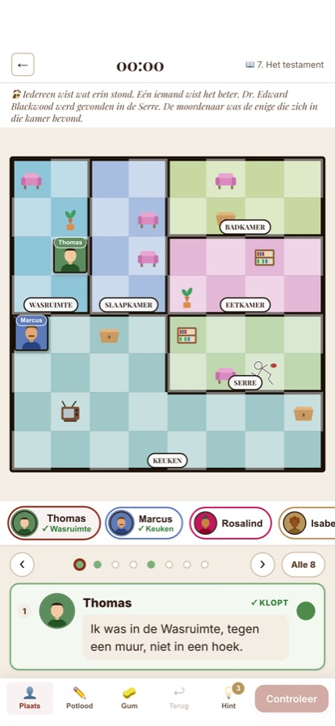
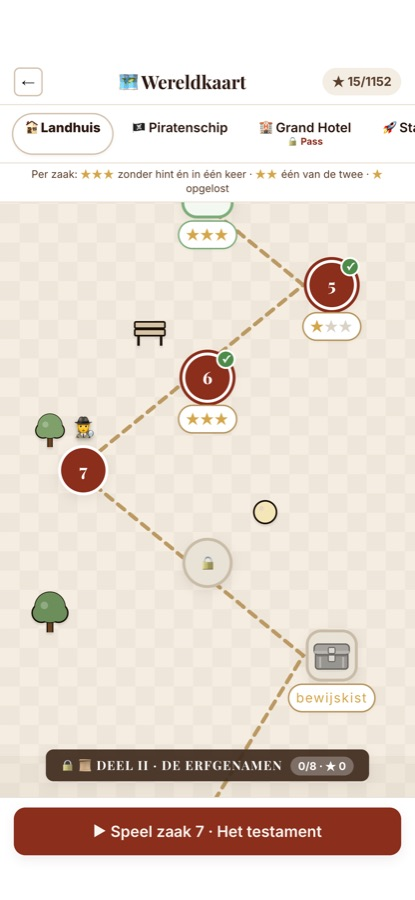
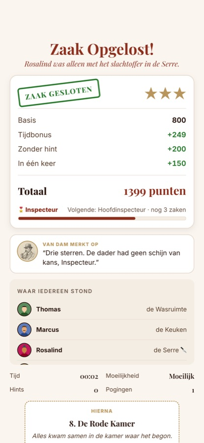

Voor iPhone
Moordmysterie op de plattegrond
Een slachtoffer, een huis vol kamers en een handvol verdachten. De verklaringen vertellen je waar iedereen stond: in een hoek van de Bibliotheek, naast een plant, links van Marcus, alleen in de Keuken. Zet iedereen op de juiste plek en wijs aan wie alleen was met het slachtoffer. Dat is de moordenaar.



Iedere zaak heeft precies één oplossing en is met pure logica op te lossen. De engine bewijst dat bij het maken van elke puzzel. Raden is nooit nodig. Zit je vast, dan wijst Inspecteur Van Dam je op de verklaring die je nog niet gebruikt hebt en legt in drie stappen uit wat daaruit volgt. Nooit het antwoord.
Het Landhuis, Het Piratenschip, Grand Hotel Aurora, Station Orion, Het Museum, De Nachttrein, Het Circus en De Skihut, op één doorlopend kronkelpad met minigames, bewijskisten en een eindeloos archief. Daarnaast elke dag een nieuwe zaak en elke week een grote.
Alles staat op je eigen toestel. Geen account, geen advertenties, geen trackers, geen abonnement. Het Landhuis en Het Piratenschip zijn gratis, samen 96 zaken, net als de dagelijkse zaak, de zaak van de week en het archief in alle werelden. De Crimson Pass opent de rest, eenmalig.
De app volgt de taal van je toestel en je kunt in Instellingen wisselen.
Crimson Ledger is a logic murder mystery for iPhone. One victim, a house full of rooms and a handful of suspects. The statements tell you where everyone stood; put everyone in the right place and point out who was alone with the victim.
Every case has exactly one solution and can be solved with pure logic. Eight worlds, 384 campaign cases, a daily case and a case of the week, mini-games, evidence chests and an endless archive. Fully offline, no account, no ads, no lives, no subscription. The Manor and The Pirate Ship are free. Available in English and Dutch.
Questions? See Support.